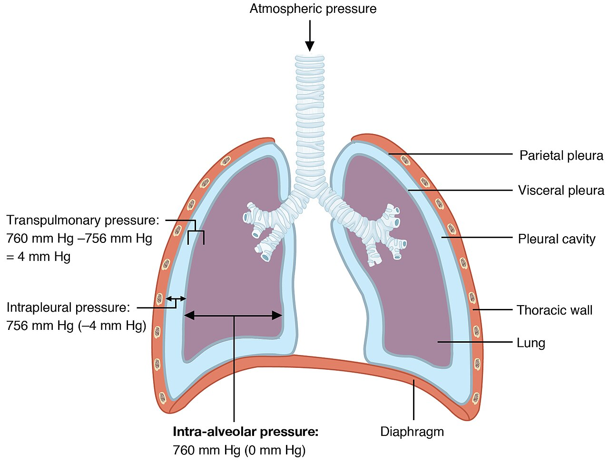
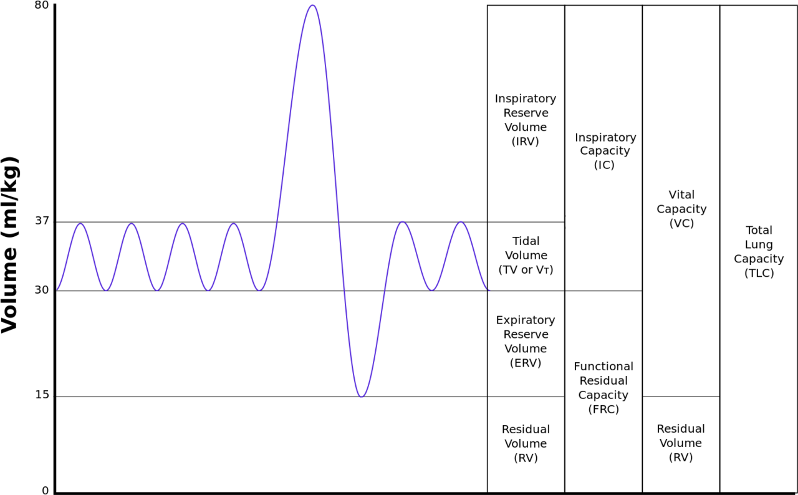
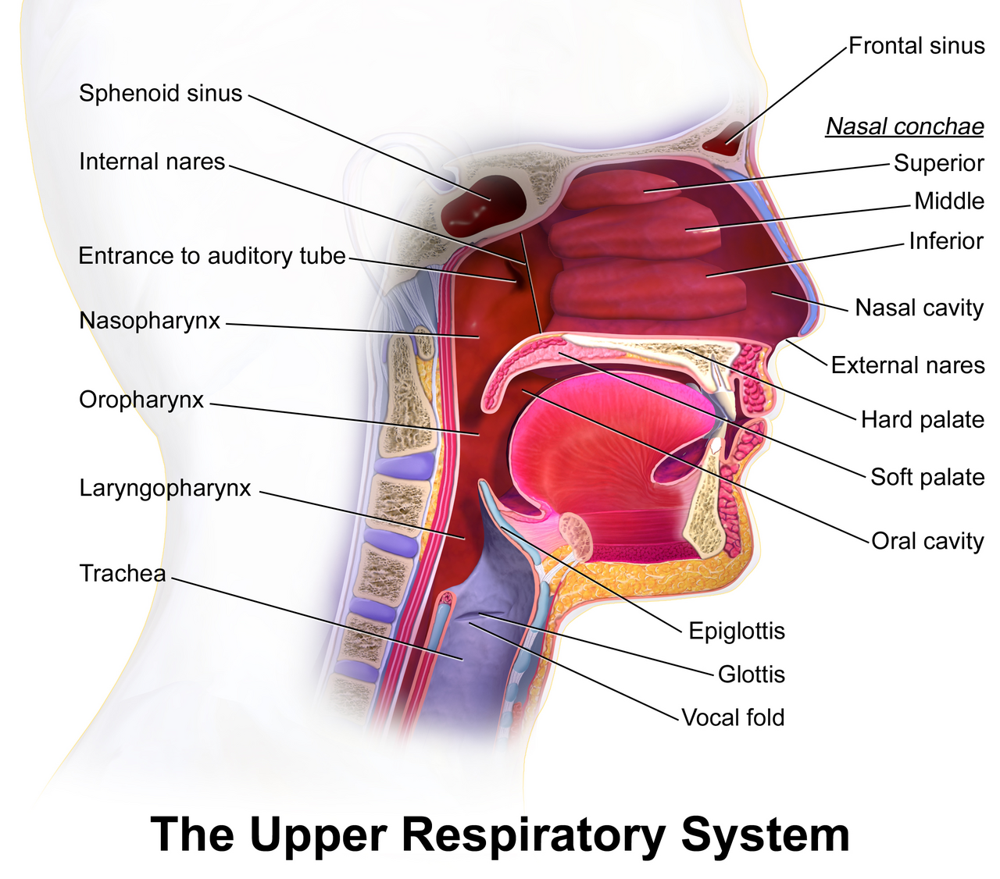
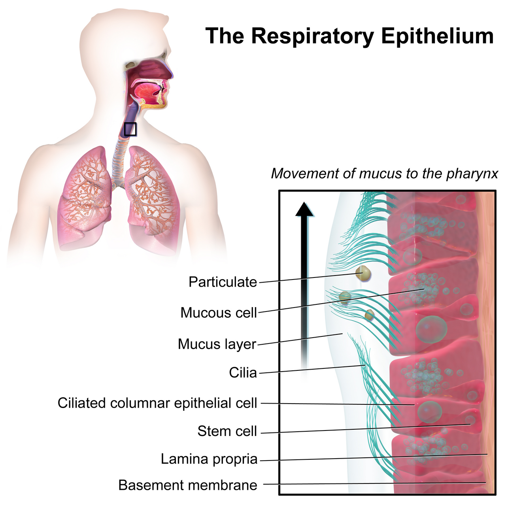
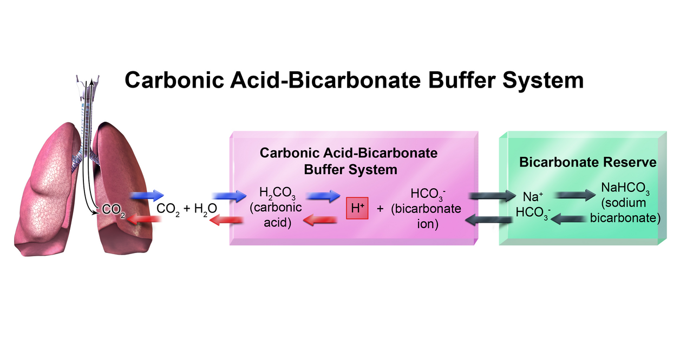

The Respiratory System
Breathing looks like something you choose to do. Almost none of it is. The respiratory system has one job. It holds two gas pressures nearly steady. Arterial oxygen tension stays near 100 mmHg. Arterial carbon dioxide tension stays at 40 mmHg. It does this with three parts. There is a pump, a membrane, and a feedback loop. The pump is skeletal muscle working on an elastic bag. It moves air only by making a pressure difference. Nothing is ever “sucked” anywhere. The membrane is half a micrometer thick. It spreads over about 70 square meters. That is a third of a tennis court. So the gases finish crossing it in a third of the time blood spends going by. The feedback loop watches carbon dioxide, not oxygen. Carbon dioxide is an acid. The body guards pH above almost everything else. Learn those three ideas. Gradient, diffusion, feedback. Then the lung stops being a list to memorize. It starts being predictable.
By the end of this module you can
- Explain how Boyle’s law and the flow rule Q = ΔP / R together make air move. Give the real intrapleural and alveolar pressures across one breath.
- Tell compliance, elastic recoil and surface tension apart. Say how surfactant and the law of Laplace keep small alveoli open.
- Work out alveolar ventilation from tidal volume, dead space and rate. Say why alveolar ventilation sets PaCO2 and minute ventilation does not.
- Read spirometry. Tell an obstructive pattern from a restrictive one using FEV1/FVC.
- Use Fick’s law of diffusion and ventilation–perfusion (V/Q) matching to predict low blood oxygen. Tell shunt apart from alveolar dead space.
- Describe oxygen–hemoglobin transport. Explain the S-shaped dissociation curve and the P50. Say what causes a right shift (Bohr effect) and what it does.
- Name the three forms of carbon dioxide transport. Explain the chloride shift and the Haldane effect.
- Draw the central chemoreceptor negative feedback loop. Name the regulated variable, the sensor, the integrator, the effector and the response.
- Use the Henderson–Hasselbalch equation to name the four primary acid–base disorders. Judge whether the compensation is the right size.
Section 1Moving Air: Pressure, Compliance and Resistance

Air flows down a pressure gradient, and nothing else
Every breath follows one rule: Q = ΔP / R. Q is airflow. ΔP is the pressure difference between the mouth and the alveoli. Alveoli are the tiny air sacs of the lung. R is airway resistance, meaning whatever slows the air down. The atmosphere sits at 760 mmHg at sea level. It does not change during a breath. So the only way to move air is to change alveolar pressure (Palv). And the only way to change alveolar pressure is to change the volume of the alveolar gas. That is Boyle’s law. At a steady temperature, P1V1 = P2V2. Make the container bigger and the pressure inside it falls.
The diaphragm is the dome of muscle under the lungs. It does about 70 percent of the volume change in quiet breathing. It contracts along with the external intercostals, the muscles between the ribs. Together they make the thorax bigger by roughly 500 mL. Alveolar pressure then falls to about 1 cmH2O below atmospheric. That is a tiny push. It is less than 0.1 percent of barometric pressure. Even so, 500 mL of air enters over about two seconds. At the top of the breath the muscles let go. Elastic recoil shrinks the lung. Alveolar pressure rises to roughly +1 cmH2O. The same volume leaves. Quiet breathing out is passive. No muscle does any work. Forced breathing out calls in the internal intercostals and the abdominal wall. Those can drive alveolar pressure to +30 cmH2O or higher.
Notice what did not happen. The chest did not “pull air in” by suction from a distance. The lung did not inflate itself. A gas cannot be pulled. It can only be pushed. Atmospheric pressure pushes air into the airway because the pressure at the far end became lower. Blood flows for the same reason. So does urine filtering, and so does cerebrospinal fluid circulating. This whole course is one Q = ΔP / R problem after another. Only the plumbing changes.
Intrapleural pressure and the two opposing springs
The lung and the chest wall are both elastic. They pull in opposite directions. A thin film of pleural fluid holds them together. Left alone, the lung would collapse until almost no air was left. Left alone, the chest wall would spring outward to about 60 percent of total lung capacity. Because they are stuck together, they settle at a compromise volume. That volume is functional residual capacity (FRC), about 2300 mL. The tug-of-war also pulls the pressure between the two layers below atmospheric. That is intrapleural pressure (Pip). It runs roughly −5 cmH2O at rest. It falls to about −8 cmH2O at the peak of a breath in.
What really holds an alveolus open is the transpulmonary pressure. It is Ptp = Palv − Pip. At FRC that is 0 − (−5) = +5 cmH2O. That is the pressure stretching the lung open. Every mechanical problem of the lung is a change in this one number. Puncture the pleural space and air rushes in. It keeps coming until Pip equals atmospheric. Transpulmonary pressure becomes zero. The lung recoils to its unstressed volume. The chest wall springs out. That is a pneumothorax. It is why the chest of a patient with a large one looks fuller, not flatter, on the affected side.
Pleural pressure sits below atmospheric. That also helps blood get back to the heart. When you breathe in, Pip falls. That drop is passed on to the great veins inside the chest and to the right atrium. So the pressure gradient from the abdominal veins to the heart gets bigger. Right ventricular filling rises with a breath in. This is the mechanical reason the pulse normally varies a little from beat to beat. It is also behind clinical signs such as pulsus paradoxus in tamponade.
Compliance, surface tension and surfactant
Compliance is the volume you gain per unit of stretching pressure. It is C = ΔV / ΔP. Normal lung compliance is about 200 mL per cmH2O. So a 2.5 cmH2O swing in transpulmonary pressure moves a 500 mL tidal breath. High compliance is not automatically good. Emphysema destroys elastin and raises compliance. The lung fills easily but recoils poorly. Air gets trapped and FRC rises. Pulmonary fibrosis, pulmonary edema and a stiff chest wall lower compliance. The lung is stiff. Volumes fall. The work of breathing climbs steeply.
Two-thirds of the lung’s recoil does not come from elastin. It comes from surface tension. A thin layer of water lines every alveolus. Where that water meets air, the water molecules pull on one another. They try to shrink the surface. That means they try to collapse the alveolus. The law of Laplace puts a number on it. For a sphere with one surface, the collapsing pressure is P = 2T / r. T is surface tension and r is radius. Here is the trap. As an alveolus gets smaller, r falls. So P rises. So it collapses faster. Small alveoli should empty into large ones until the lung is a few big bags.
They do not, and here is why. Type II pneumocytes are cells in the alveolar wall. They make surfactant. Surfactant is a phospholipid, chiefly dipalmitoylphosphatidylcholine. It slips in between water molecules and lowers T. The timing is the clever part. Surfactant molecules pack closer together as the alveolus shrinks. So T falls exactly when r falls. The ratio 2T/r stays manageable. Surfactant steadies small alveoli. It raises compliance. It lowers the work of breathing. A fetus makes enough of it around 34–36 weeks of gestation. A preterm infant born before that develops neonatal respiratory distress syndrome. The lungs are stiff. The baby grunts, which is an attempt to hold positive pressure in at the end of a breath out. Alveoli collapse all through the lung, which is called atelectasis.
Resistance and the work of breathing
Airway resistance follows Poiseuille’s law. R rises as 1 / r4. Halve a bronchiole’s radius and its resistance goes up sixteen times. Now the surprise. The greatest single site of resistance is not the terminal bronchioles. It is the medium-sized bronchi. The small airways are so numerous, and they sit side by side, so their combined cross-sectional area is enormous. That anatomical fact matters at the bedside. Early small-airway disease is silent. And the mid-expiratory flow rate (FEF 25–75) falls before FEV1 does.
Smooth muscle in the bronchial wall tunes resistance. Parasympathetic traffic, by way of the vagus and muscarinic M3 receptors, narrows the airways and makes mucus. Epinephrine in the blood acts on beta-2 receptors and widens them. That is why a short-acting beta-2 agonist is the rescue inhaler in asthma. It is also why an antimuscarinic helps in chronic obstructive pulmonary disease. In quiet breathing, the work of breathing uses only about 3 to 5 percent of resting oxygen consumption. In severe obstructive disease it can pass 30 percent. That is a large part of why these patients lose weight and finally tire out.
Air moves only because muscle contraction changes the volume of the thorax, and that changes alveolar pressure. How much air moves for a given effort depends on two things. One is the lung’s compliance, set largely by surfactant and elastin. The other is the resistance of the airways.
Section 2Volumes, Dead Space and Alveolar Ventilation

The four volumes and the four capacities
A volume is one single compartment. A capacity is two or more volumes added together. The table below gives typical values for a 70 kg young adult male. Values run 20 to 25 percent lower in females of the same age and height. Memorizing the numbers is not the point. Knowing which ones move in disease is. Residual volume and FRC rise in obstruction, because air is trapped. In restriction, every volume falls together.
| Volume or capacity | Typical value | Definition |
|---|---|---|
| Tidal volume (VT) | 500 mL | Air moved in one quiet breath |
| Inspiratory reserve volume | 3000 mL | Extra air inhaled beyond a tidal breath |
| Expiratory reserve volume | 1100 mL | Extra air exhaled beyond a tidal breath |
| Residual volume (RV) | 1200 mL | Air left after you blow out as hard as you can. It keeps alveoli open |
| Inspiratory capacity | 3500 mL | VT + IRV |
| Functional residual capacity | 2300 mL | ERV + RV. The volume the lung rests at |
| Vital capacity (VC) | 4600 mL | IRV + VT + ERV. The largest breath you can take |
| Total lung capacity (TLC) | 5800 mL | VC + RV |
A simple spirometer cannot measure residual volume. You cannot blow out air that will not come out. So it cannot measure FRC or TLC either. Those need helium dilution, nitrogen washout or body plethysmography. FRC matters for a reason. It is a standing reservoir of gas. It keeps alveolar gas from swinging wildly between breaths. Each breath brings in 500 mL of fresh air, and 350 mL of that reaches the alveoli. It mixes into a standing 2300 mL. So alveolar PO2 moves by only a few mmHg across a breathing cycle. Without that reservoir it would swing between 150 and 40 mmHg.
Dead space, and why minute ventilation lies to you
Roughly 150 mL of each 500 mL tidal breath never reaches an alveolus. It stops in the conducting zone. That runs from the nose to the terminal bronchioles, generations 0 through 16. There is no capillary bed there, so no gas is traded. This wasted volume is anatomical dead space. It comes to about 2.2 mL per kilogram of ideal body weight. Alveolar dead space is a different thing. Those alveoli get air but get no blood, as in pulmonary embolism. In health it is near zero. Add the two together and you get physiological dead space.
That gives us the most useful equation in respiratory physiology. It is alveolar ventilation VA = (VT − VD) × f. Try it out. Take 500 mL breaths, 150 mL of dead space, and 12 breaths per minute. Minute ventilation is 6000 mL/min. But alveolar ventilation is only (500 − 150) × 12 = 4200 mL/min. Now change the pattern and hold minute ventilation the same. Breathe 250 mL twenty-four times a minute. Minute ventilation is still 6000 mL/min. But VA = (250 − 150) × 24 = 2400 mL/min. That is a 43 percent collapse in effective ventilation. Breathe 1000 mL six times a minute instead and VA = 5100 mL/min.
So rapid shallow breathing in a tiring patient is a bad sign. The respiratory rate may look reassuring, even “compensatory.” It is not. Slow deep breathing is the efficient pattern. This is also why PaCO2 runs opposite to alveolar ventilation. The equation is PaCO2 = (VCO2 × 0.863) / VA. Halve alveolar ventilation and PaCO2 doubles from 40 to 80 mmHg. Double it and PaCO2 falls to 20 mmHg. In practice, arterial carbon dioxide is a direct readout of alveolar ventilation.
Spirometry: separating obstruction from restriction
Forced spirometry works like this. The patient breathes in as deeply as possible. Then they blow out as hard and as long as they can. Two numbers do most of the work. FVC is the total volume blown out. FEV1 is the volume blown out in the first second. In health, FEV1/FVC is 0.75 to 0.80. A healthy adult empties about four-fifths of the vital capacity in one second.
In obstructive disease the airways narrow or collapse. Asthma, chronic bronchitis, emphysema and bronchiectasis all do this. Flow slows out of proportion to volume. FEV1 falls much more than FVC, and the ratio drops below 0.70. The lung never empties fully, so RV, FRC and often TLC rise. Restrictive disease is the opposite problem. The lung or the chest wall cannot expand. Fibrosis, kyphoscoliosis, obesity and neuromuscular weakness do this. FVC, TLC and FEV1 all fall together, roughly in proportion. So the ratio stays normal or even rises, to 0.85 or above. One more test helps. Give a bronchodilator. If FEV1 improves by at least 12 percent and 200 mL, that supports asthma rather than fixed obstruction.
One mechanical detail explains something strange. In obstructive disease, blowing out harder can cut the flow. Here is why. A forced effort makes pleural pressure strongly positive. That squeezes the airways from the outside. In a normal lung the pressure inside the airway falls along its length. It still stays above pleural pressure until the bronchi, which cartilage holds open. Emphysema destroys the elastic tethers that hold airways open. That shifts the equal pressure point further out, into floppy airways. Those airways then collapse. This is dynamic airway compression. Trying harder makes flow worse. That is why patients with emphysema breathe out slowly through pursed lips. It keeps airway pressure up.
Only the part of each breath that reaches perfused alveoli counts. So alveolar ventilation sets PaCO2. Minute ventilation does not. And the FEV1/FVC ratio separates two problems. It tells airways that will not empty from lungs that will not fill.
Section 3Diffusion, V/Q Matching and Gas Transport

Fick’s law and why diffusion is almost never the problem
Gas crosses the respiratory membrane by passive diffusion. Fick’s law describes it. The rate of transfer is surface area times the diffusion coefficient times the partial pressure difference. Then divide all that by membrane thickness. The lung is built to make every helpful term as good as it can be. Surface area is about 70 square meters. Thickness is roughly 0.5 micrometers. Three layers make up that thickness. They are the alveolar type I cell, the fused basement membrane and the capillary endothelium. The driving gradient for oxygen is large. Alveolar PO2 (PAO2) is about 104 mmHg. Mixed venous PO2 is 40 mmHg.
So the two sides even out fast. A red cell spends about 0.75 seconds in a pulmonary capillary at rest. Its PO2 has matched alveolar PO2 within roughly 0.25 seconds. That is a threefold safety margin. In heavy exercise the transit time falls to about 0.25 seconds. A normal lung still keeps up. This is why a pure diffusion problem rarely causes low blood oxygen at rest. Low blood oxygen is called hypoxemia. A diffusion problem usually shows up only during exercise. It can also show up once interstitial disease has thickened the membrane and destroyed surface area.
Carbon dioxide makes a useful contrast. Its gradient is tiny. It runs from 45 mmHg venous to 40 mmHg alveolar. Yet it crosses just as completely. CO2 is about twenty times more soluble in the membrane than oxygen. So it diffuses roughly twenty times faster. A practical rule follows straight from that. Diffusion problems and V/Q problems cause hypoxemia long before they cause hypercapnia. And a rising PaCO2 nearly always means a ventilation problem, not an exchange problem.
| Site | PO2 (mmHg) | PCO2 (mmHg) | Comment |
|---|---|---|---|
| Dry atmospheric air | 160 | 0.3 | 0.209 × 760 mmHg |
| Humidified tracheal air | 150 | 0 | 0.209 × (760 − 47), after water vapor is subtracted |
| Alveolar gas | 104 | 40 | Watered down by CO2 and by the gas already in FRC |
| Systemic arterial blood | 95–100 | 40 | A little below alveolar because of normal shunt |
| Mixed venous blood | 40 | 45–46 | After tissue extraction |
| Resting tissue interstitium | 40 | 45 | Sets the tissue diffusion gradient |
Ventilation–perfusion matching
Diffusion only helps if air-filled alveoli sit next to blood-filled capillaries. For the whole lung, divide alveolar ventilation by cardiac output. That is the V/Q ratio. It is about 4.2 L/min divided by 5.0 L/min, or roughly 0.8. But the ratio is not the same everywhere. Standing up, gravity raises both ventilation and perfusion at the base. Perfusion rises far more steeply than ventilation does. So the apex runs a high V/Q near 3.3. It gets relatively too much air, and its PO2 is about 130 mmHg. The base runs a low V/Q near 0.63. It gets relatively too much blood, and its PO2 is about 89 mmHg. More blood drains from the base, so mixed arterial PO2 is pulled down toward the base value. That is one reason arterial PO2 (95–100 mmHg) sits a little below alveolar PO2 (104 mmHg).
Two extremes mark the ends of the disease range. A V/Q of zero is a shunt. Blood flows past alveoli that get no air. Lobar pneumonia, atelectasis and pulmonary edema all do this. A V/Q of infinity is alveolar dead space. Those alveoli get air but no blood, as in pulmonary embolism. One bedside test tells them apart. Give 100 percent oxygen. Dead space and simple V/Q mismatch correct readily with extra oxygen. A true shunt does not. Shunted blood never touches alveolar gas at all, no matter how rich that gas is.
The lung defends its own matching with local reflexes. Hypoxic pulmonary vasoconstriction is the main one. It does the opposite of what systemic vessels do. When alveolar PO2 falls below about 70 mmHg, pulmonary arterioles narrow. Blood is sent to better-ventilated regions. In one small region that is elegant. Across the whole lung it is a disaster. At altitude, or in advanced chronic lung disease, the entire pulmonary bed narrows. Pulmonary artery pressure rises. The right ventricle finally fails, which is cor pulmonale. Airways make a matching adjustment of their own. A low local PCO2 narrows nearby airways, which shifts air away from units that are short of blood.
Oxygen transport and the dissociation curve
Oxygen barely dissolves in plasma. At a PaO2 of 100 mmHg, dissolved oxygen is only 0.003 mL per dL per mmHg. That gives 0.3 mL/dL. It is about 1.5 percent of all the oxygen the blood carries. The other 98.5 percent rides on hemoglobin. Fully saturated, hemoglobin binds 1.34 mL of oxygen per gram. With 15 g/dL of hemoglobin, oxygen content is roughly (15 × 1.34 × 0.98) + 0.3. That is about 20 mL per dL of blood. Look hard at what that equation has in it, and what it does not. Content depends on hemoglobin concentration and saturation. It does not depend on PaO2 directly. Take an anemic patient with 7 g/dL hemoglobin and a saturation of 100 percent. That blood carries only 9.7 mL/dL. It is deeply oxygen-poor blood. Yet the PaO2 is perfectly normal, and so is the pulse oximeter reading.
The oxyhemoglobin dissociation curve has an S shape. That is because hemoglobin binds oxygen cooperatively. Each of the four hem groups that binds raises the affinity of the ones still empty. Above a PO2 of about 60 mmHg the curve goes flat. That flat top is a loading safety margin. PaO2 can fall from 100 to 60 mmHg and saturation only drops from 98 to about 90 percent. Below 60 mmHg the curve is steep. That steep part is the unloading zone. In tissue at a PO2 of 40 mmHg, saturation is about 75 percent. So roughly a quarter of the oxygen carried has been delivered at rest. The P50 is the PO2 at 50 percent saturation. In normal adult blood it is 26.6 mmHg.
A right shift means hemoglobin holds oxygen less tightly and lets go of it more easily. The conditions inside a working muscle cause it. Those are a higher PCO2 and more hydrogen ion, which is the Bohr effect. A higher temperature does it too. So does more 2,3-bisphosphoglycerate (2,3-BPG), which rises in long-standing hypoxemia, anemia and high altitude. A left shift does the opposite and holds oxygen tightly. Alkalosis, hypothermia, low 2,3-BPG, stored bank blood and fetal hemoglobin all shift left. In the fetus that left shift is useful, not accidental. It lets the fetus strip oxygen from maternal blood across the placenta. Carbon monoxide is toxic in two ways at once. It binds hemoglobin with roughly 210 times the affinity of oxygen. It also left-shifts the curve for the sites that are left, so the little oxygen carried is released poorly. Carboxyhemoglobin absorbs light much like oxyhemoglobin does. So a standard pulse oximeter reads falsely normal.
Carbon dioxide transport and the Haldane effect
Tissues make roughly 200 mL of CO2 per minute at rest. Blood carries it three ways. About 7 to 10 percent stays dissolved in plasma. About 20 to 23 percent binds to the amino terminal groups of the globin chains as carbaminohemoglobin. Note where it binds. It binds the globin, not the hem. So it does not compete with oxygen for the same site. The remaining 70 percent is turned into bicarbonate.
That conversion happens inside the red cell. Carbonic anhydrase speeds up CO2 + H2O to H2CO3 by a factor of thousands. Carbonic acid then splits into H+ and HCO3-. The bicarbonate leaves the cell in trade for plasma chloride coming in. The band 3 anion exchanger runs that trade. It is called the chloride shift. Meanwhile deoxygenated hemoglobin soaks up the hydrogen ion. In the lung the whole sequence runs backwards. Chloride leaves, bicarbonate re-enters, and CO2 is breathed out.
The Haldane effect closes the loop. Deoxygenated hemoglobin buffers protons better than oxygenated hemoglobin does. It also carries carbamino CO2 better. So handing oxygen to the tissues helps blood pick up CO2. And loading oxygen in the lung drives CO2 off. Bohr and Haldane together make the two gases help each other instead of compete. It is genuinely elegant chemistry, and it needs no nervous or hormonal control at all.
Gas exchange fails far more often from ventilation–perfusion mismatch than from diffusion. And oxygen delivery depends on how much hemoglobin there is and where the dissociation curve sits. It does not depend on PaO2 alone.
Section 4The Control of Breathing

The brainstem rhythm generator
Breathing is automatic because a network of neurons in the medulla oscillates on its own. The pre-Bötzinger complex sits in the ventrolateral medulla. Its neurons act like pacemakers. They depolarize rhythmically and set the basic rate of breathing in. It feeds two groups. The dorsal respiratory group is mostly inspiratory. It drives the phrenic nerve, which comes from C3, C4 and C5 and runs to the diaphragm. The ventral respiratory group holds both inspiratory and expiratory neurons. They are called in mainly for forced breathing. Centers in the pons shape the pattern rather than create it. The pneumotaxic group, also called the pontine respiratory group, limits how long a breath in lasts. It also smooths the switch to breathing out.
Two points matter at the bedside. First, the phrenic nerve starts high in the cord. The old mnemonic says “C3, 4, 5 keeps the diaphragm alive.” So a cervical cord injury above C3 stops spontaneous breathing completely. A lesion at C6 spares the diaphragm. That patient breathes but cannot cough forcefully. Second, the rhythm is made in the brainstem. So a cortical injury can leave breathing intact while wiping out consciousness. Voluntary override travels by a separate corticospinal path. That is why a person can hold their breath but cannot hold it to the point of death. Rising PaCO2 finally overwhelms the cortical command.
The central chemoreceptor loop: the system’s core negative feedback
Set it out formally. This is the loop the entire module is built around.
| Element | Identity in this loop |
|---|---|
| Regulated variable | Arterial PCO2, held near 40 mmHg (normal range 35–45) |
| Stimulus | A rise in PaCO2. It can come from hypoventilation, exercise, fever or added dead space |
| Sensor | Central chemoreceptors on the front surface of the medulla. They detect H+ in cerebrospinal fluid |
| Integrator | The dorsal and ventral respiratory groups of the medulla, with the pons shaping the pattern |
| Effector | The diaphragm, through the phrenic nerve. The external intercostals, through the intercostal nerves |
| Response | Increased rate and depth, raising alveolar ventilation |
| Result | CO2 is blown off. PaCO2 falls back toward 40 mmHg. The stimulus is removed. That is negative feedback |
The sensing step is worth a closer look. It explains several bedside facts. Hydrogen ions and bicarbonate cross the blood–brain barrier poorly. Dissolved CO2 crosses freely. Once it is in the cerebrospinal fluid, CO2 meets carbonic anhydrase and makes H+. CSF holds very little protein buffer. So its pH swings far more per unit of CO2 than blood pH does. That makes the central chemoreceptors extremely sensitive to PaCO2. A rise of just 1 to 2 mmHg makes ventilation go up. Over a PaCO2 range of only 40 to 60 mmHg, the system can multiply minute ventilation several times over. It explains one more thing. A metabolic acidosis drives breathing more slowly than a respiratory one does. The offending H+ has to work its way across the barrier, or act on the peripheral receptors first.
Central chemoreceptors account for roughly 70 percent of the ventilatory response to CO2. Long-standing hypercapnia blunts them. The choroid plexus slowly moves bicarbonate into the CSF. That brings CSF pH back toward normal even though PaCO2 stays high. This is adaptation, not repair. In those patients the hypoxic drive carries more weight. That is the physiology behind the caution about uncontrolled high-flow oxygen in chronic CO2 retainers. Two other things matter at least as much as lost drive. One is loss of hypoxic pulmonary vasoconstriction. The other is the Haldane effect.
Peripheral chemoreceptors and the hypoxic backup
The carotid bodies sit where each common carotid artery splits. The aortic bodies sit on the aortic arch. Both sample arterial blood directly. The carotid bodies signal through the glossopharyngeal nerve (CN IX). The aortic bodies signal through the vagus (CN X). They respond to three things. Those are a fall in PaO2, a rise in PaCO2 and a fall in arterial pH. They are the only receptors that sense oxygen. Gram for gram, their blood flow is the highest of any tissue in the body. So the blood they sample is as good as arterial.
Their oxygen response is not a straight line. Firing barely changes until PaO2 falls below about 60 mmHg. That is exactly the shoulder of the oxyhemoglobin dissociation curve. It is where content finally starts to fall steeply. Below that threshold, firing climbs sharply. The design logic is sound. There is no point spending ventilatory work while saturation is still 90 percent. So here is the lesson. Oxygen is a backup controller, not the primary one. Under ordinary circumstances, what makes you breathe is carbon dioxide.
Other inputs adjust the rhythm. The Hering–Breuer inflation reflex uses vagal stretch receptors. It cuts off very large breaths, above roughly 1.5 L tidal volume. That guards against over-filling the lung. It is stronger in infants than in adults. Irritant receptors set off cough and narrow the airways. Juxtacapillary receptors, called J receptors, sit in the alveolar walls. They fire when the interstitium fills with fluid. They produce the rapid shallow breathing and the breathlessness of heart failure. Receptors in joints and muscles raise ventilation too. So does central command from the motor cortex. Both act at the very onset of exercise, before any blood gas has had time to change.
That last point explains a genuine puzzle. In heavy exercise, minute ventilation may rise from 6 L/min at rest to 100 L/min or more. Yet through the whole moderate range, PaO2, PaCO2 and pH stay very close to resting values. So a chemical error signal is not driving ventilation at all. Neural command and input from moving joints and muscles raise it ahead of time. That is feed-forward control. Chemoreceptors only fine-tune. Ventilation climbs out of proportion only above the anaerobic threshold. There lactate builds up and is buffered to CO2. Only then does pH finally fall.
Breathing is a rhythm generated in the brainstem. A negative feedback loop regulates it. The variable it senses is carbon dioxide, acting through cerebrospinal fluid H+. Arterial oxygen serves only as a backup. It engages below a PaO2 of about 60 mmHg.
Section 5The Lung as an Acid–Base Organ

Carbon dioxide is an acid, and the lung excretes most of it
Arterial pH is defended within 7.35 to 7.45. That is a hydrogen ion concentration of only about 40 nanomoles per liter. It is roughly one three-millionth of the sodium concentration. Enzymes, ion channels and protein shapes are all deeply sensitive to H+. A pH below 6.8 or above 7.8 is generally not survivable. Two organs share the defense. The lung carries by far the larger tonnage.
Metabolism generates about 15,000 mmol of CO2 every day. CO2 combines with water to make carbonic acid. So that is a volatile acid load, meaning an acid that can leave as a gas. The lung gets rid of nearly all of it by breathing. Fixed acids are different. They come from protein and phospholipid metabolism. They include sulfuric, phosphoric, lactic and keto acids. They amount to only 50 to 100 mEq per day. The kidney handles those over hours to days. The division of labor matters. The lung responds in minutes and is powerful, but it handles only one acid. The kidney is slow, but it can excrete anything and it can regenerate bicarbonate.
The Henderson–Hasselbalch equation puts numbers on the bicarbonate system. It is pH = 6.1 + log([HCO3-] / (0.03 × PaCO2)). Take a normal bicarbonate of 24 mEq/L and a PaCO2 of 40 mmHg. The bottom of the fraction is 1.2 mmol/L. The ratio is 20 to 1. The log of 20 is 1.3. So pH = 7.4. Everything in acid–base comes down to protecting that 20:1 ratio. The top of the fraction is metabolic and renal. The bottom is respiratory. Change one, and the body changes the other in the same direction to restore the ratio.
The four primary disorders
Naming a disorder takes two decisions. First, is the pH acidic or alkaline? Second, which limb of the ratio explains it? If PaCO2 explains it, the disorder is respiratory. If bicarbonate explains it, the disorder is metabolic.
| Disorder | pH | Primary change | Compensation | Typical causes |
|---|---|---|---|---|
| Respiratory acidosis | Low (below 7.35) | PaCO2 high (above 45) | Kidney: holds on to HCO3-, which rises over 3–5 days | Opioid overdose, COPD exacerbation, neuromuscular weakness, airway obstruction |
| Respiratory alkalosis | High (above 7.45) | PaCO2 low (below 35) | Kidney: gets rid of HCO3- over 2–3 days | Anxiety, pain, fever, sepsis, pulmonary embolism, altitude, salicylate early |
| Metabolic acidosis | Low | HCO3- low (below 22) | Lung: hyperventilation, within minutes to hours | Diabetic ketoacidosis, lactic acidosis, renal failure, severe diarrhea |
| Metabolic alkalosis | High | HCO3- high (above 26) | Lung: hypoventilation, but only so far | Prolonged vomiting, nasogastric suction, diuretics, excess antacid |
Respiratory compensation for a metabolic acidosis is the fastest and most visible response in clinical medicine. Take diabetic ketoacidosis. Ketoacids consume bicarbonate. The pH falls. Chemoreceptors fire. The patient adopts Kussmaul respirations. Those are deep sighing breaths with a high tidal volume. They can drive PaCO2 down to 15 mmHg. You can predict the expected value. Winter’s formula gives expected PaCO2 = (1.5 × [HCO3-]) + 8, plus or minus 2. A bicarbonate of 10 predicts a PaCO2 of about 23. Now suppose the measured PaCO2 is 40. That patient is not simply under-compensating. They have a second, respiratory disorder on top of the first. And they are tiring.
Compensation never fully corrects the pH, and knowing that is diagnostically powerful. Say a laboratory value shows a completely normal pH with an abnormal PaCO2 and an abnormal bicarbonate. Suspect a mixed disorder rather than perfect compensation. The direction of the pH always reveals the primary problem.
Reading a blood gas, and the A–a gradient
Work in a fixed order. First, look at the pH. Is it acidemia or alkalemia? Second, look at the PaCO2. If it moves in the direction that would explain the pH, the disorder is respiratory. That means high with acidemia, or low with alkalemia. Third, look at the bicarbonate. If it moves in the direction that explains the pH, the disorder is metabolic. That means low with acidemia, or high with alkalemia. Fourth, check the other limb. Has it moved in the compensating direction, and by an appropriate amount? Fifth, if a metabolic acidosis is present, calculate the anion gap. It is [Na+] − ([Cl-] + [HCO3-]), normally 8 to 12 mEq/L.
Oxygenation is assessed separately. The single most informative number is the alveolar–arterial oxygen gradient. First estimate alveolar PO2 with the alveolar gas equation. It is PAO2 = (FiO2 × 713) − (PaCO2 / 0.8). On room air with a PaCO2 of 40, that is (0.21 × 713) − 50 = about 100 mmHg. Then subtract the measured PaO2. A normal A–a gradient is roughly 5 to 15 mmHg in a young adult. It rises with age, at roughly age divided by 4, plus 4.
The gradient sorts causes of hypoxemia into two families. A normal A–a gradient with a low PaO2 means the alveolus itself is oxygen-poor. That is either hypoventilation, where PaCO2 will be high, or low inspired oxygen, as at altitude. A widened gradient means the alveolus is fine but the blood is not getting the oxygen. That points to V/Q mismatch, shunt or diffusion impairment. In the opioid-overdose patient the gradient is normal and the problem is drive. In the patient with pneumonia the gradient is wide and the problem is exchange. Same low PaO2. Entirely different physiology, and entirely different treatment.
CO2 is an acid, so ventilation is a pH control system. The Henderson–Hasselbalch equation holds a 20:1 ratio of bicarbonate to carbonic acid. The lung defends that ratio in minutes. The kidney defends it over days. And the direction of the pH always names the primary disorder.
The module in one breath
Respiration is four linked problems. First comes mechanics. Skeletal muscle enlarges the thorax. Boyle’s law drops alveolar pressure about 1 cmH2O below atmospheric. Then 500 mL of air flows in, following Q = ΔP / R. Elastic recoil and surface tension oppose inflation. Surfactant lowers surface tension in step with alveolar size, so small alveoli hold open against the law of Laplace. Second comes distribution. Only the 350 mL that clears the 150 mL of dead space takes part. So alveolar ventilation of about 4200 mL/min sets PaCO2 at 40 mmHg. Minute ventilation does not. Third comes exchange and transport. Diffusion across a 0.5 micrometer membrane is complete in a third of the available transit time. So hypoxemia usually reflects V/Q mismatch or shunt. Delivery depends on hemoglobin content and on where the S-shaped dissociation curve sits. The Bohr and Haldane effects make O2 and CO2 handling help each other. Fourth comes control. Chemoreceptors in the medulla sense the hydrogen ion that CO2 generates in the CSF. They adjust ventilation by negative feedback. The carotid bodies engage only below a PaO2 of 60 mmHg. Because CO2 is an acid, that same loop is the fast arm of acid–base regulation. It defends the 20:1 bicarbonate ratio the kidney maintains over days.
Words worth knowing
| Term | What it means |
|---|---|
| Alveolar ventilation (VA) | Fresh air reaching perfused alveoli each minute. It is (VT − VD) × rate, about 4200 mL/min. It sets PaCO2. |
| Anatomical dead space | The roughly 150 mL of conducting airway where no gas is traded. It is about 2.2 mL per kg. |
| Bohr effect | More H+ and PCO2 shift the oxyhemoglobin curve right. That helps oxygen unload in active tissue. |
| Boyle’s law | At a steady temperature, pressure and volume move in opposite directions. It is the basis of every breath. |
| Chloride shift | Bicarbonate leaves the red cell and plasma chloride comes in. It lets 70 percent of CO2 travel as HCO3-. |
| Compliance | ΔV / ΔP, about 200 mL per cmH2O. High in emphysema, low in fibrosis. |
| Cor pulmonale | Right ventricular failure caused by pulmonary vascular resistance that stays high. |
| FEV1/FVC ratio | The share of vital capacity blown out in one second. Normally 0.75–0.80, and below 0.70 in obstruction. |
| Functional residual capacity | The volume left after a quiet breath out, about 2300 mL. It is the buffer that steadies alveolar gas composition. |
| Haldane effect | Deoxygenated hemoglobin carries CO2 and buffers H+ better. So unloading O2 helps load CO2. |
| Henderson–Hasselbalch equation | pH = 6.1 + log([HCO3-] / (0.03 × PaCO2)). A 20:1 ratio gives pH 7.4. |
| Hypoxic pulmonary vasoconstriction | Pulmonary arterioles narrow when alveolar PO2 falls. That sends blood to better-ventilated lung. |
| Law of Laplace | Collapsing pressure P = 2T / r. Small alveoli would collapse if surfactant did not lower T. |
| P50 | The PO2 at which hemoglobin is 50 percent saturated, normally 26.6 mmHg. It rises with a right shift. |
| Shunt | Blood flow without ventilation (V/Q of zero). The low oxygen does not correct with supplemental oxygen. |
| Surfactant | A phospholipid from type II pneumocytes. It lowers surface tension, raises compliance and prevents atelectasis. |
| Transpulmonary pressure | Palv − Pip, about +5 cmH2O at FRC. It is the true distending pressure of the lung. |
| V/Q ratio | Alveolar ventilation divided by perfusion, about 0.8 overall. Upright it is 3.3 at the apex and 0.63 at the base. |
| Winter’s formula | Expected PaCO2 = (1.5 × [HCO3-]) + 8 ± 2. It tests whether respiratory compensation is adequate. |
| A–a gradient | Alveolar PO2 minus arterial PO2, normally 5–15 mmHg. Normal in hypoventilation, wide in shunt or V/Q mismatch. |